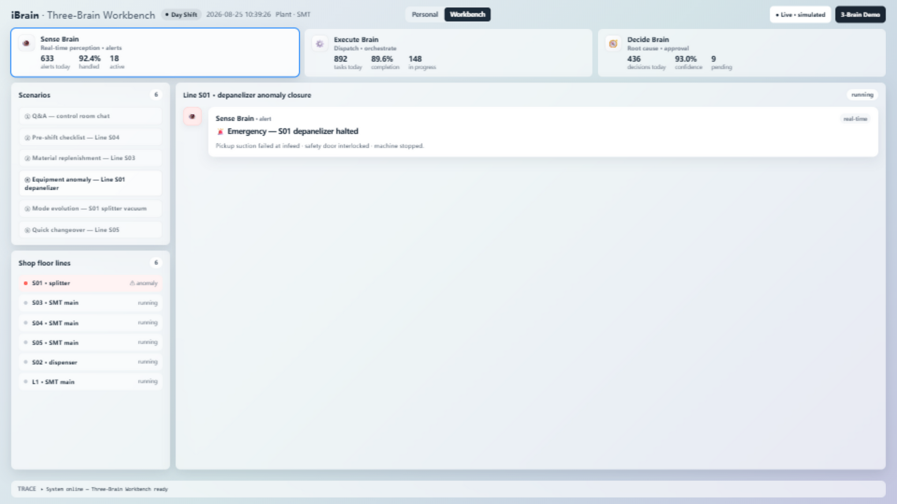
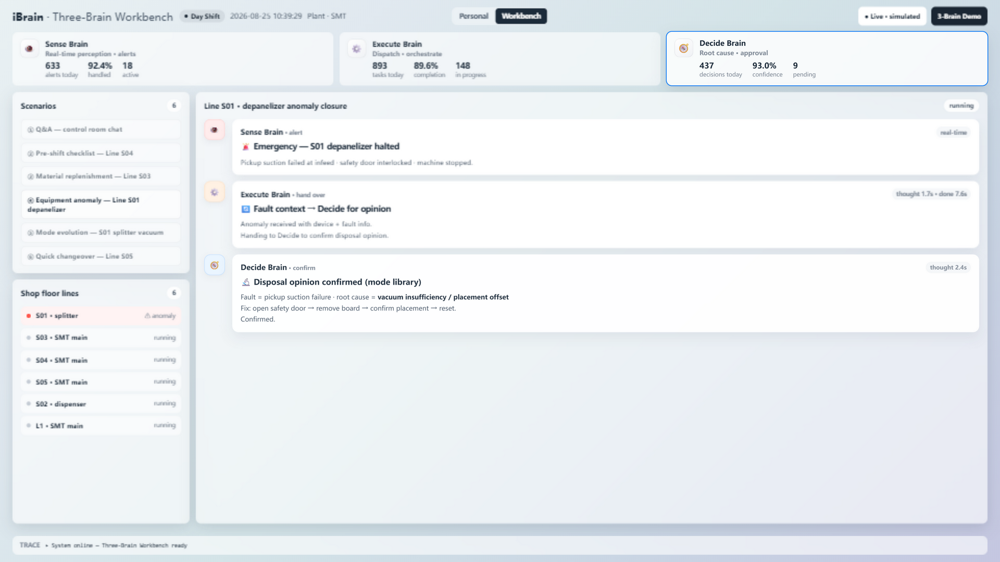
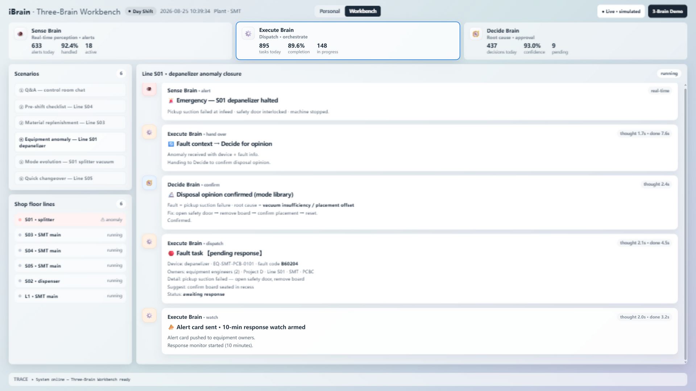
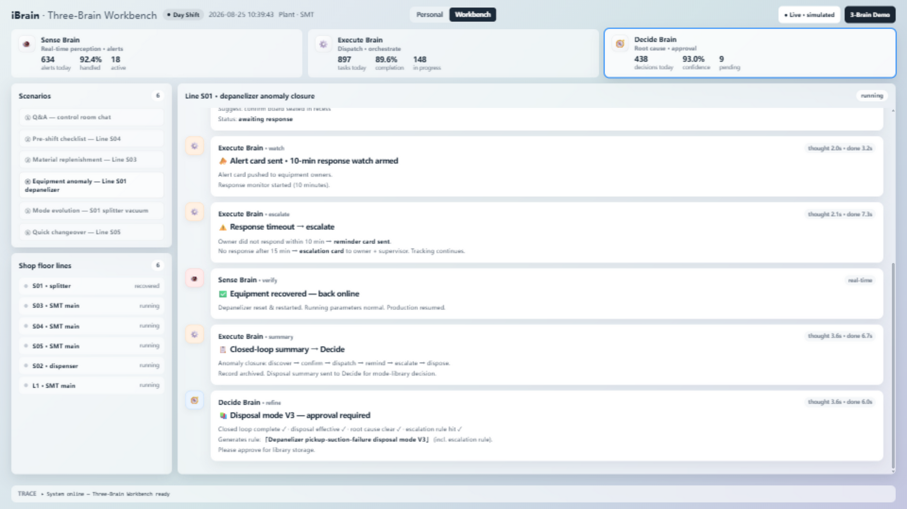
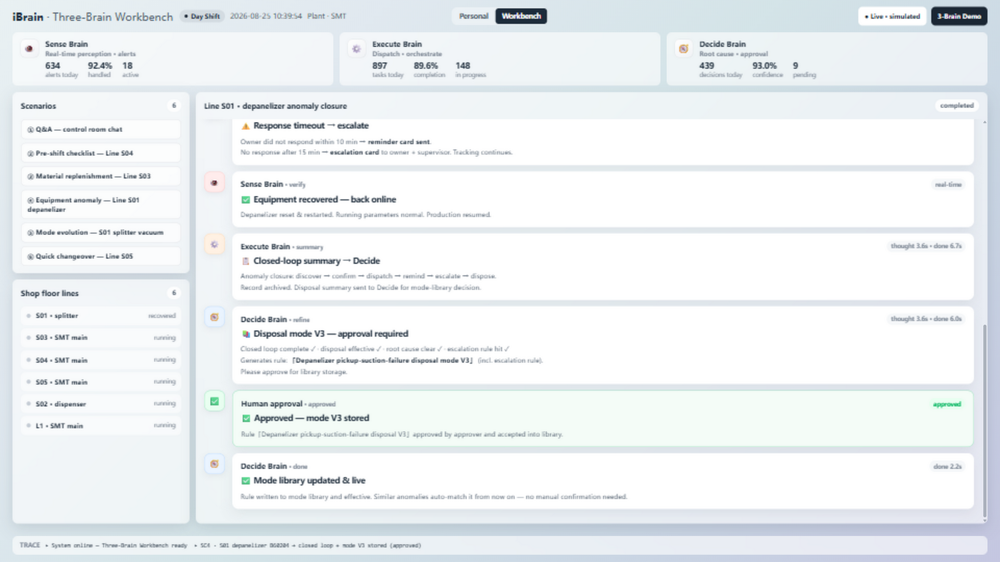

Sense
Real-time perception of machines and lines: live alarms, line status, and only the signals that matter — surfaced before they become downtime.
Industrial Brain is a multi-agent platform for factory operations. Three specialized agents work as one — perceiving machine signals, orchestrating workflows and controlling risk — so everyday requests like “what happened on Line S01?” become monitored, executed, human-approved action loops.

Sense, Execute and Decide share a single data ontology — so perception, action and risk control stay in sync across the shop floor.
Real-time perception of machines and lines: live alarms, line status, and only the signals that matter — surfaced before they become downtime.
Turns plain-language requests into monitored workflows — detecting, confirming, dispatching, escalating and recovering, step by step.
Root-cause analysis and risk control over a 2,000+ rule ontology. High-risk actions always require human sign-off.
Every scenario runs to completion in the browser — from the first signal to the closed loop and the recorded trace.
All line names, numbers and events are simulated and desensitized.
A quick tour of the workbench, the three agents and one full action loop.
Prefer to explore? Open the interactive demo — no sign-up needed.




Anonymized pilot data — no customer names, numbers or locations shown.
The demo runs fully in your browser on simulated data — nothing is uploaded, no accounts needed. The production platform deploys on-premises (private network) with field-level permissions and full audit trails; no data leaves your factory.
On-premises or private cloud, containerized, with control-plane / execution-plane separation for high availability. Typical rollout: 2–4 weeks with existing MES/SCADA connectors.
The live demo is free. Production licensing is per-site; contact us for a tailored quote and pilot program.
Existing MES, equipment interfaces (OPC-UA etc.), messaging platforms, and 4,000+ legacy system APIs via a capability hub — old systems can be called by AI without re-engineering.
The demo showcases six realistic factory scenarios (Q&A, pre-shift checks, material replenishment, equipment anomaly closure, mode evolution, quick changeover). A pilot with anonymized factory data can be arranged.
Want a guided walkthrough, a pilot with your own scenarios, or the technical deep-dive? We usually reply within one business day.